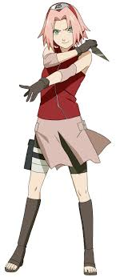

Se usa la etiqueta IMG para agregar ilustraciones a nuestra pagina web, algunos atributosque se usan son src para especificar la url de la iamgen , la ruta debe contener la carpeta donde esta almacenada y el nombre del archivo con su extension y el atributo alt especifica texto alternativo para la imagen , que se muestra si la imagen no puede cargar
Existen otros atributos como title,width y height. title sirve para agregar un titulo que se visualiza cuando posicionamos el puntero en la imagen, width se usa para asignar para asignar una medida de ancho y heigth para altura, si no lo asignamos, la imagen carga con su tamaño original (es recomendable usar css para tamaños) ejemplo:
En HTML encontramos 2 etiquetas complementarias ya que una de ellas sirve como contenedor de la imagen, llamada Figure, y otra llamada figcaption que sirve como una descripcion de dicha imagen. Por ejemplo:
De esta manera, la imagen y su descripción están relacionadas semánticamente, ayudando a motores de busqueda y los lectores de pantalla a entender mejor el contenido.